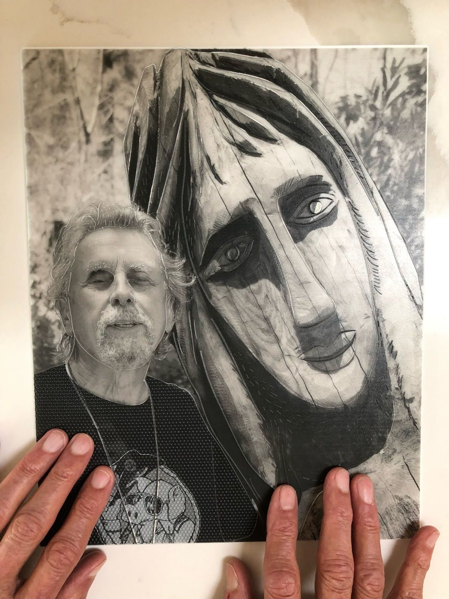

Access to Visual Arts for Blind Patrons
Role: Co-Lead - project planning, survey design, execution, analysis, and writing
Methods: 15 semi-structured interviews, follow-up survey with 220 blind patrons
Impact: Actionable design insights for museums, cultural institutions, and accessibility technology developers
Overview
Access to visual arts often stops at compliance: audio guides, tactile graphics, or guided tours. But for Blind and low-vision (BLV) patrons, these approaches don’t always align with their motivations - whether aesthetic enjoyment, social connection, or cultural activism. Museums and tech providers lacked evidence on how BLV patrons actually experience art and what kinds of access they prefer.

A participant is touching the tactile art piece that was made by an artist to recall his wife who had passed away.
Approach
As co-lead, I helped design a two-phase study to balance depth and generalizability:
- Interviews (15 BLV patrons): To uncover lived experiences and generate design considerations.
- Survey (220 BLV patrons): To measure preferences across access methods and design factors (e.g., tactile vs. audio, layered descriptions, social settings) and examine how vision level and blindness onset shape those preferences.
This approach allowed us to both surface new design principles and validate which were most widely needed.
Key Insights & Industry Impact
- BLV patrons seek more than factual access - they value aesthetic richness, layered stories, and social inclusion.
- Survey data showed strong preferences for tactile access (especially among congenitally blind) and layered multimodal options (audio + tactile).
- Eight concrete design considerations emerged, including standards for descriptions, destigmatizing tactile exploration, and improving synchronous feedback.
- Industry relevance: These insights guide museums and technology providers to move beyond compliance toward scalable, multimodal, and engaging access solutions.
Published at
CHI ’23, this work is already informing cultural institutions exploring next-generation accessibility experiences.